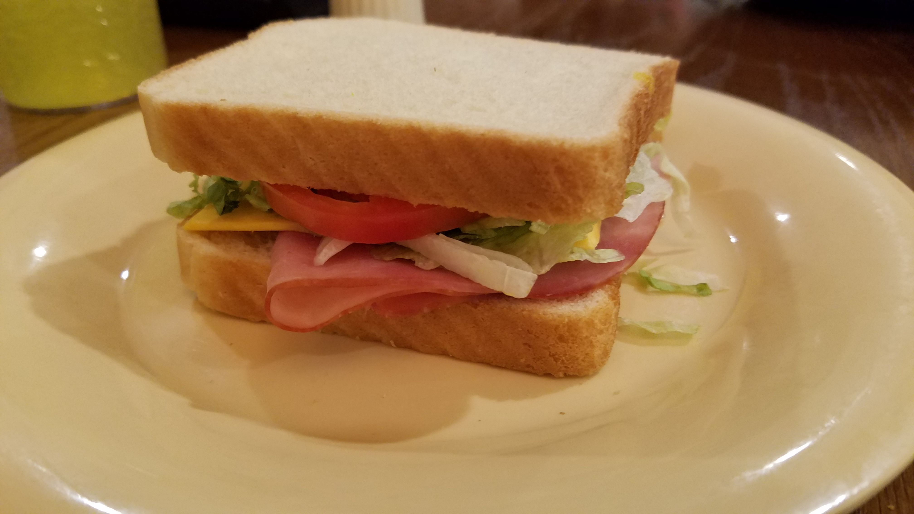

So today we are going to be going through the steps on how to make a ham and cheese sandwich. This is an easy meal that anyone can make for themselves or a friend. there are a few steps involved in makinging a ham and cheese sandwich which include: preparation, construction, and serving. If executed properly, you will be enjoying your very own delicious ham and cheese sandwich!
The first step to making a ham and cheese sandwich is preparation! You will need to gather the following items to complete your sandwich
It is always important to find the best tasting ingredients to satisfy your hunger. Below is a table that shows the percentage of people that like the following types of breads, hams, and cheeses. After asking over 200 people, below are the average scores on a scale of 1-10 (10 being the tastiest)
| Ham type | rating |
|---|---|
| Smoked Ham | 7.2 |
| Honey Maple Ham | 9.3 |
| Prosciutto Ham | 9.6 |
| Jamon Ham | 4.9 |
| Bread type | rating |
|---|---|
| White Bread | 8.7 |
| Wheat Bread | 9.1 |
| Sourdough Bread | 6.5 |
| Cheese type | rating |
|---|---|
| Yellow American | 9.7 |
| Cheddar | 7.2 |
| Swiss | 8.4 |
Now that you've decided on all of your ingredients, it's time to move on to step 2, Construction. This step is fairly simple, but crucial for the end result of a well-formed sandwich. Follow these steps and you should have a perfectly made sandwich!
If followed properlly, you should get a sandwich that looks similar to this! 
The finsl step before we eat our delicious ham and cheese sandwich is serving. There are multiple ways you can serve your sandwich to make your meal perfect. My personal favorite is to have my sandwich pressed, but this requires a panini press, which you probably dont have at home. A close second is to toast your sandwich in the oven. This helps melt the cheese and warm up the ham. If you prefer a cold sandwich, you can just skip these steps. If you would like, you can even cut your sandwich in half to make it easier to hold! Lastly, you can put your sandwich on your favorite plate, pour some chips, grab a fruit and enjoy! Your AMAZING ham and cheese sandwich is complete!
For some more complicated sandwich ideas, please visit this link which has over 35 amazing recipies for delicious sandwiches! Sandwich_recipies!